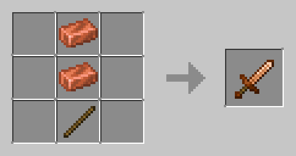
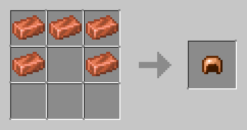

Verdant Gear [Original] Addon
Crafting Recipes
Tools

Armor

Stats
- Tools offer durability slightly above stone but lower than iron.
- Armor provides defense between gold and iron.
- Balanced for early-game survival with accessible crafting recipes.